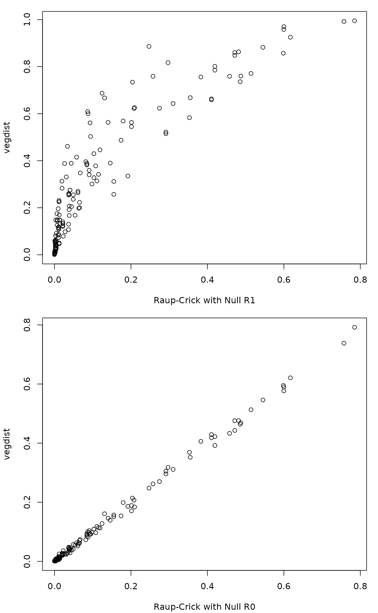

Raup-Crick Dissimilarity with Unequal Sampling Densities of Species
raupcrick.RdFunction finds the Raup-Crick dissimilarity which is a probability of number of co-occurring species with species occurrence probabilities proportional to species frequencies.
Arguments
- comm
Community data which will be treated as presence/absence data.
- null
Null model used as the
methodinoecosimu.- nsimul
Number of null communities for assessing the dissimilarity index.
- chase
Use the Chase et al. (2011) method of tie handling (not recommended except for comparing the results against the Chase script).
- ...
Other parameters passed to
oecosimu.
Details
Raup-Crick index is the probability that compared sampling units have non-identical species composition. This probability can be regarded as a dissimilarity, although it is not metric: identical sampling units can have dissimilarity slightly above \(0\), the dissimilarity can be nearly zero over a range of shared species, and sampling units with no shared species can have dissimilarity slightly below \(1\). Moreover, communities sharing rare species appear as more similar (lower probability of finding rare species together), than communities sharing the same number of common species.
The function will always treat the data as binary (presence/ absence).
The probability is assessed using simulation with
oecosimu where the test statistic is the observed
number of shared species between sampling units evaluated against a
community null model (see Examples). The default null model is
"r1" where the probability of selecting species is
proportional to the species frequencies.
The vegdist function implements a variant of the
Raup-Crick index with equal sampling probabilities for species using
exact analytic equations without simulation. This corresponds to
null model "r0" which also can be used with the
current function. All other null model methods of
oecosimu can be used with the current function, but
they are new unpublished methods.
Value
The function returns an object inheriting from
dist which can be interpreted as a dissimilarity
matrix.
References
Chase, J.M., Kraft, N.J.B., Smith, K.G., Vellend, M. and Inouye, B.D. (2011). Using null models to disentangle variation in community dissimilarity from variation in \(\alpha\)-diversity. Ecosphere 2:art24 doi:10.1890/ES10-00117.1
Author
The function was developed after Brian Inouye contacted us and informed us about the method in Chase et al. (2011), and the function takes its idea from the code that was published with their paper. The current function was written by Jari Oksanen.
Note
The test statistic is the number of shared species, and this is
typically tied with a large number of simulation results. The tied
values are handled differently in the current function and in the
function published with Chase et al. (2011). In vegan, the
index is the number of simulated values that are smaller or
equal than the observed value, but smaller than observed value is
used by Chase et al. (2011) with option split = FALSE in
their script; this can be achieved with chase = TRUE in
vegan. Chase et al. (2011) script with split = TRUE
uses half of tied simulation values to calculate a distance measure,
and that choice cannot be directly reproduced in vegan (it is the
average of vegan raupcrick results with
chase = TRUE and chase = FALSE).
See also
The function is based on oecosimu. Function
vegdist with method = "raup" implements a related
index but with equal sampling densities of species, and
designdist demonstrates its calculation.
Examples
## data set with variable species richness
data(sipoo)
## default raupcrick
dr1 <- raupcrick(sipoo)
## use null model "r0" of oecosimu
dr0 <- raupcrick(sipoo, null = "r0")
## vegdist(..., method = "raup") corresponds to 'null = "r0"'
d <- vegdist(sipoo, "raup")
op <- par(mfrow=c(2,1), mar=c(4,4,1,1)+.1)
plot(dr1 ~ d, xlab = "Raup-Crick with Null R1", ylab="vegdist")
plot(dr0 ~ d, xlab = "Raup-Crick with Null R0", ylab="vegdist")

par(op)
## The calculation is essentially as in the following oecosimu() call,
## except that designdist() is replaced with faster code
if (FALSE)
oecosimu(sipoo, function(x) designdist(x, "J", "binary"), method = "r1")
# \dontrun{}